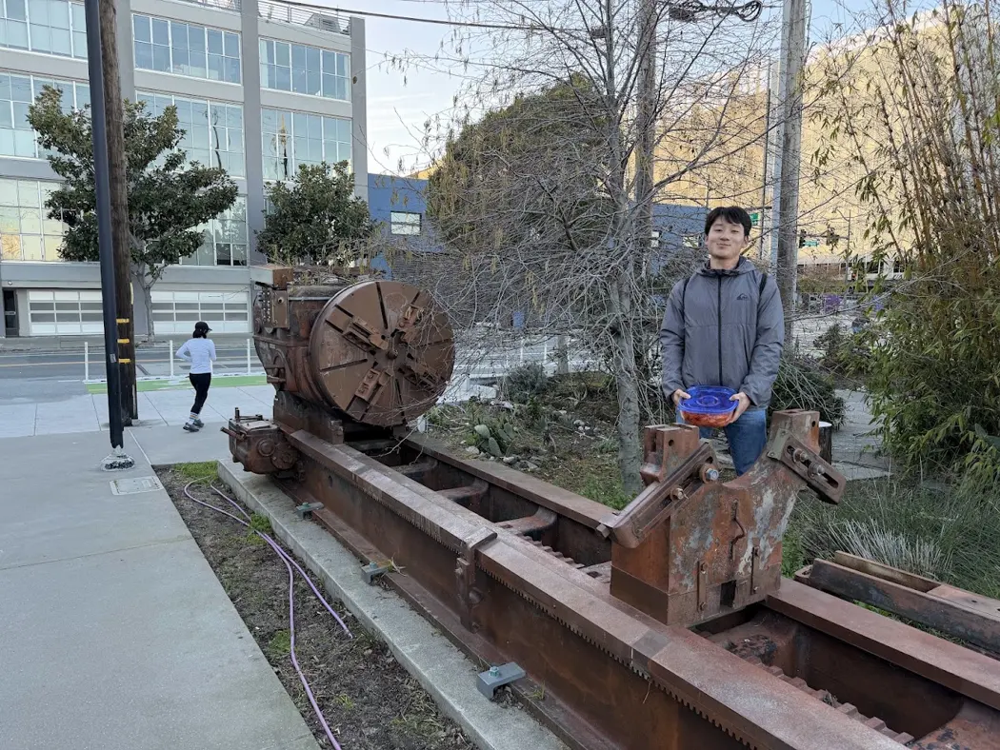
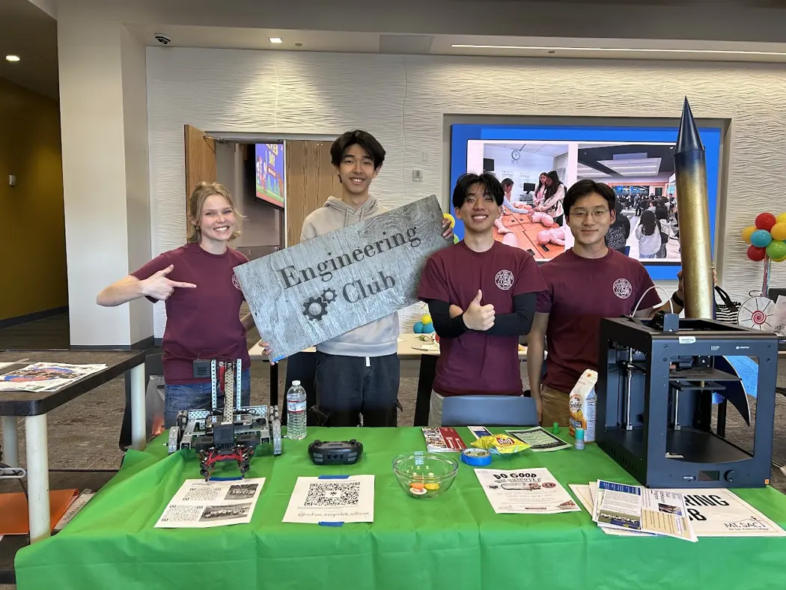
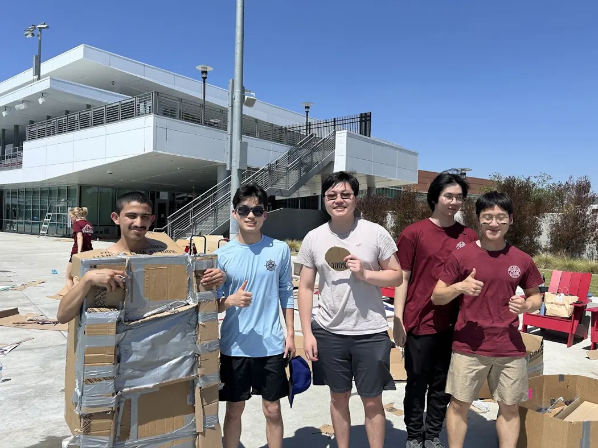
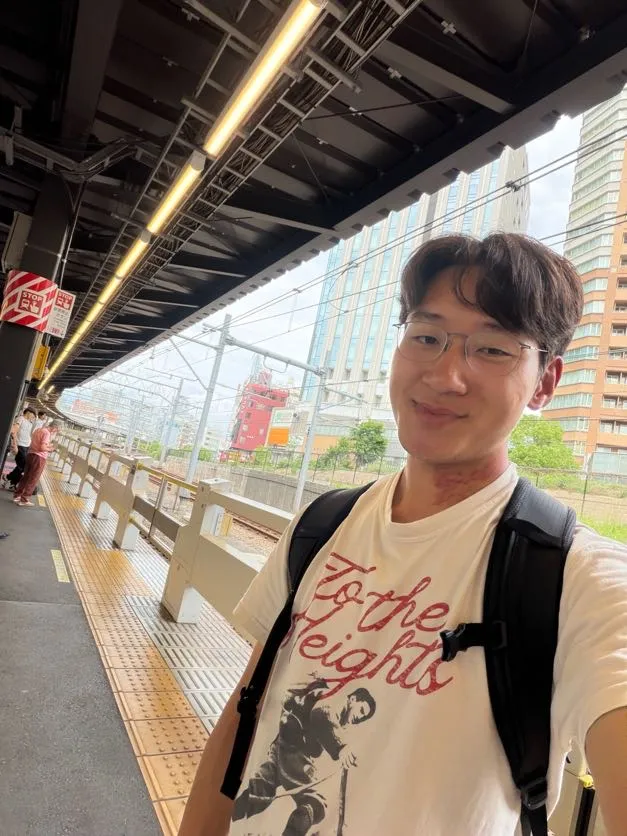

Beyond Engineering
A little about my life outside engineering, from Scouting to volunteering and learning Korean.
Scouting
My time in Boy Scouts is part of my story, and my Scoutmaster is someone I want to recognize here.
Volunteering
Before I switched to engineering, I volunteered in a hospital while exploring a path in health care.
Life outside engineering
At Berkeley, I’ve been getting more comfortable speaking Korean in everyday conversations.

Mt. SAC Engineering Club
I served as Vice President of the Engineering Club at Mt. San Antonio College.


Hobbies
I enjoy traveling and playing tennis.
